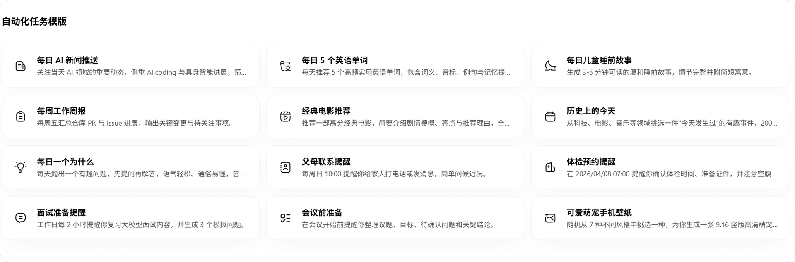

每周行业简报从三小时到二十分钟，我把 WorkBuddy 插进了一条全自动链
以前周五下午要开五个窗口手动拼一份行业动态简报，现在一条自动化链路从扫邮箱到发群消息全部跑完——讲具体怎么接的。
每周五下午三点，我有一件固定要做的事：整理一份行业动态简报，发到团队企业微信群。内容来源三块——我订阅的技术周报邮箱、团队成员在腾讯文档上提交的本周调研笔记、以及自己零散记在飞书知识库里的想法。
以前这件事要花将近三小时。流程是这样的：先打开 QQ 邮箱，把这周收到的十几封周报逐封扫一遍，把值得保留的段落复制到一个临时文档；再切到腾讯文档，找到团队周报文件夹，逐个打开看有没有新补充；然后切换到飞书知识库，搜自己之前标记的关键词笔记；最后把三部分内容拼起来、调格式、写一段开场白，手动发到企业微信群里。中间光是切换应用窗口、等文档加载、重复复制粘贴，就占了大半时间。
真正让我下决心改流程的，是上个月有一次周五人在外地出差，下午三点还在客户会议室里，手机上开邮箱加文档加群聊三个 App 来回切，差点错过发简报的时间。回来之后我开始琢磨：能不能把这条链的每一环都接给一个工具，让它自己跑？正好手头有之前下载下来的 WorkBuddy 客户端，先拿它试试。
新流程：WorkBuddy 当中间枢纽，五个连接器串起整条链
现在的流程是这样的——我在 WorkBuddy官网 上下载的客户端里开一个自动化任务，每周五下午两点半自动触发。它依次做五件事：
- 通过 QQ 邮箱连接器扫我那几个技术周报订阅文件夹，把本周未读邮件里出现频率最高的几个关键词摘出来；
- 通过 腾讯文档连接器打开团队周报文件夹，把所有新提交的调研笔记读一遍；
- 通过 飞书知识库连接器搜索我之前标记的关键词，把相关的零散片段拉出来；
- 三部分内容合并之后，让 WorkBuddy 按固定格式整理成简报——开头一段总述、每块内容分小节、末尾加自己的观察；
- 最后通过 企业微信连接器，把整理好的简报直接发到团队群里。
整条链跑完大概二十分钟。我要么在旁边看它执行日志，要么干脆开手机上的微信助理，远程发一句"这周简报帮我盯着发了"就行。

实操中最容易断的两个环节
跑了三周之后，发现有两个地方最容易出问题，专门记一下。
第一个是连接器的授权边界。 腾讯文档连接器默认只读你自己创建或被分享给你的文档，但团队周报文件夹是共享空间——第一次跑的时候，它告诉我"找不到这个文件夹"，我还以为是路径写错了，后来才弄明白：连接器只认你本人的授权范围，共享空间的文档需要你先在网页端打开过一次，让文档权限跟你的账号绑定，WorkBuddy 才能读到。解决办法很简单，每周一上班先打开团队周报文件夹点一下"标记已读"，后面就不会再断了。
第二个是循环检测触发时的积分确认。 有一次我给任务加了一个"如果简报太短就自动多搜一轮关键词"的逻辑，结果那天关键词太偏，WorkBuddy 搜了一个又一个都不够，触发了循环执行检测。我当时选了"终止请求"，那次的模型消耗还进入了退费评估——虽然钱不多，但退费要等系统处理，不如一开始就把循环上限设死。现在我的自动化任务里，每一环都加了明确的"最多执行 N 次"的硬限制，不允许它无限重试。
记忆功能在这里帮了一个忙。它会自动记住我每周关注的关键词范围——比如这周它发现我搜了"边缘 AI""本地推理"，下周它就会默认把这两个词放进搜索池里，不用我每次手动改任务模板。后来去WorkBuddy文档翻了一下才弄明白，记忆是每晚从当周会话里自动提取的，不消耗额外积分，这点我挺喜欢。

效果和边界
跑了五周之后，实际省下的时间比我预想的多——不是"三小时变二十分钟"这么线性，而是它帮我省掉了好几次手动复制粘贴、等文档加载、切换窗口的碎片化时间，这些碎片加起来其实是最累的部分。
但这条链也不是什么时候都划算。有两个场景我不会用它：
一是简报里需要大量主观判断的时候。比如团队周报里有好几条冲突的观点，需要我自己拍板选哪条放进简报——这种事连接器能拉数据，但不能替我做判断，手动处理反而更快。
二是连接器没有覆盖的数据源。我有一部分行业情报来自一个收费的 RSS 订阅服务，但 WorkBuddy 官方目前没出这个服务的连接器。WorkBuddy 支持安装自定义的 MCP 服务来扩展连接器列表，我打算这周研究一下，把那个 RSS 源也接进来。
还有一点要注意：用手机微信助理远程触发任务的时候，电脑得保持开机并运行 WorkBuddy。有一次我出门忘了关电脑，结果助理发消息过去没人接，最后还是靠同事手动发了简报。现在我给电脑设了定时开机脚本，每周五下午两点自动唤醒，就不会再掉链子了。
这套流程跑起来之后，我才真正体会到"工具链"和"单一工具"的区别——以前是我自己在五个应用之间当搬运工，现在 WorkBuddy 是中间枢纽，连接器是齿轮，每个齿轮各司其职。关键是这条链可以持续加东西进去：下周把 RSS 源接上，下下周试试让它自己生成简报里的插图素材，再下下周加一个"如果简报里出现特定关键词就额外发一条通知到我私人微信"的分支逻辑。不用推翻重来，增量扩展就行。
WorkBuddy 的连接器和助理功能，加上记忆模块的自动偏好学习，是这套流程能跑起来的核心。对了，这套资料在三个仓库都能拿到，维护起来也不担心丢——GitHub、Gitee、GitCode 上同步更新，国内访问哪个方便就用哪个。